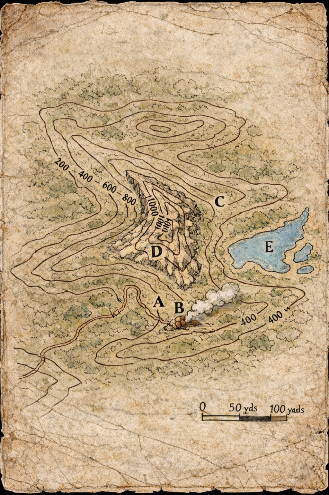

Board Face
The Hill As They Marked It
The main sheet appears older than the charcoal circles and side notes. The letters remain, but the meaning must be taken from the scraps pinned around the edges. Tap or click a mark to read the note tied to it.

The old road is too well made to be chance. It shows itself from the valley when the light is low.
Fresh traffic came down within a day, perhaps during the last dark. Heavy tread. No discipline in the spacing.
Smoke leaks from a crack lower on the slope, though the hill hides the mouth until you nearly stand on it.
Edric says no grown soul in armor is going down there. Tamsin called him timid and marked it anyway.
Brush on the east side is broken low, with spoil and stone where no roots should have shifted them.
Could be old digging, could be beast work, could be nothing. We did not linger there after dusk.
The summit gives a fine line over the woods and nearly tears the hands from you on the last stretch.
No sure sign was seen there. Marked only to keep someone else from wasting the climb twice.
Cold mere east of the tooth. Bad footing, open shore, no clean approach, and insects enough to drive speech from a man.
Brother Caldus judged it useless and wanted it struck from the sheet. It stayed only because the place felt wrong at dusk.